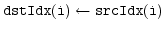

| CSIM User Manual |


 |
| CSIM User Manual |
|
The handles returned by idx=csim('create',...); are used to identify the objects later in 'set', 'get' and 'connect' calls.
See the Class Reference for a full description of all available classes.
If idx is a vector and value is a scalar then the fields of all objects are set to value.
If idx and value are vectors of the same size then the field field of all objects idx(i) is set to value(i).
dstIdx and srcIdx can also be vectors. In that case for each i=1:length(srcIdx); a signal flow  is set up.